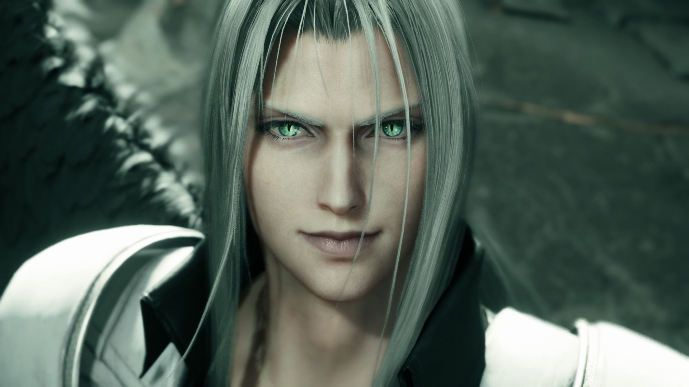

Ex-SOLDIER com amnésia, busca por respostas sobre seu passado e se junta à AVALANCHE para salvar o planeta. Habilidoso com a espada e determinado a proteger seus amigos.
Barret Wallace
Líder da AVALANCHE, um grupo rebelde que luta contra a Shinra. Forte, protetor e com um passado marcado pela perda. Utiliza um canhão acoplado ao braço mecânico.
Tifa Lockhart
Amiga de infância de Cloud e membro da AVALANCHE. Habilidosa em artes marciais, forte e determinada. É um pilar emocional para o grupo.
Aerith Gainsborough
Vendedora de flores com uma conexão profunda com o planeta. É a última descendente dos Ancients e possui poderes místicos. Gentil, compassiva e com um destino trágico.
Red XIII
Criatura inteligente com aparência de leão, capturado pela Shinra para experimentos. Leal, inteligente e com um profundo conhecimento sobre a história do mundo.
Cait Sith
Gato robótico com uma personalidade dual, controlado por um Moogle. Ajudante do grupo com habilidades de adivinhação e ataques mágicos.
Cid Highwind
Piloto experiente e mecânico, sonha em voar para o espaço. É um mentor para o grupo e oferece suporte técnico.
Yuffie Kisaragi
Jovem ninja e ladra, busca um material raro para fortalecer sua vila. Rápida, ágil e com um senso de humor único.
Vincent Valentine
Marcado por experimentos, ele vive em isolamento na mansão da família Shinra. Misterioso e com um passado obscuro, Vincent possui habilidades sobrenaturais e uma arma única chamada "Chaos". Motivado por um amor não correspondido e pela culpa, ele se junta ao grupo de Cloud em busca de redenção e para enfrentar seus demônios internos.

Sephiroth
Sephiroth é um dos vilões mais icônicos de Final Fantasy VII. Criado como uma arma biológica perfeita, ele se torna obcecado pela verdade sobre sua origem e desenvolve uma personalidade psicopata. Manipulador e poderoso, Sephiroth busca a destruição do planeta, acreditando ser um deus.